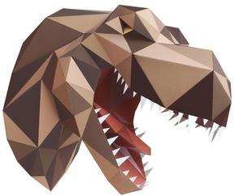
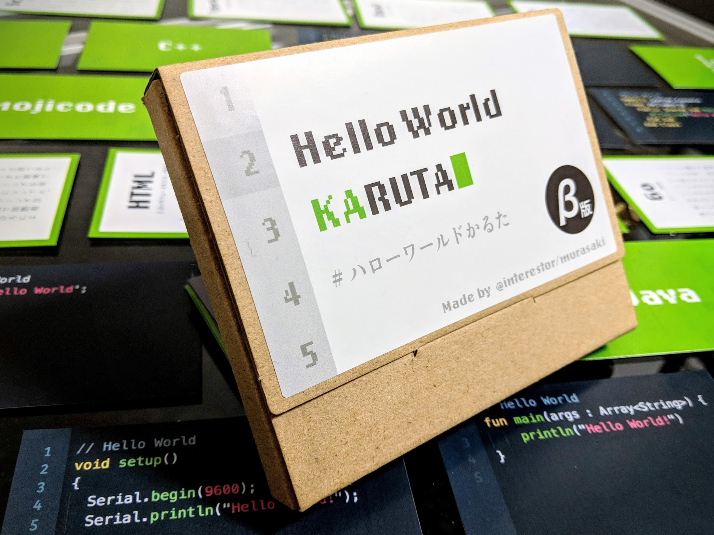

Spirit
アイデアや技術をカタチにし、それを必要としている人に使ってもらうこと。そこには大きな喜びがあり、そして社会をより豊かで住みやすくすると信じています。
「アイデアはあるが素早く形にできない」「活かしたい技術はあるが何を作ったらいいかわからない」という会社や個人のお手伝いをすることで、「カタチにする喜び」を広めたいと思っています。
About

むらさき（Saki Tomine）
大手地図会社に入社、営業を経て社長付け企画室や事業企画部で新規事業・新規商品の企画を行う。退職後ものづくりの世界的講座FabAcademyを卒業、Fabmasterとなり、Fablab北加賀屋のインターンを経験。現在はフリーランスとして、企画・デザイン・ライティングなどを請け負いながら、farmtory-labというコミュニティ活動を立ち上げる。
- Skills
- イラストレーション(AdobeIllustrator)/デジタルファブリケーション(3Dプリント・レーザーカッター・CNC・Arduino・eagle等)/CAD(fusion360・Rhinoceros・blender・Meshmixer等)/ライティング/ファシリテーション
- Awards
- ゼンリン在職中 新入社員特別賞/社長賞特別賞/本部長賞
- OpendataChallenge2014 datavisualize部門最優秀賞
Works
在職中に携わった仕事
- パッケージソフトの企画
- 地図柄ステーショナリーmatimatiプロジェクト
hogehogehogehogehogehogehogehogehogehogehogehogehogehogehogehogehogehogehoge.
ポリゴンペーパークラフト
- キャノンクリエイティブパーク用のペーパークラフト設計・組み立て説明書
- ポリゴナイズした動物の全身ペーパークラフト型紙サイトgeoanimals
hogehogehogehogehogehogehogehogehogehogehogehogehogehogehogehogehogehogehoge.
展示会用モック製作・コーディネイト

- 技術書展・通販での販売
hogehogehogehogehogehogehogehogehogehogehogehogehogehogehogehogehogehogehoge.
Sutudies
FabAcademy

- myBiosphere
- その他
hogehogehogehogehogehogehogehogehogehogehogehogehogehogehogehogehogehogehoge.
HelloWorldカルタ
- 技術書展・通販での販売
hogehogehogehogehogehogehogehogehogehogehogehogehogehogehogehogehogehogehoge.
gedatavisualizeworkshop

- 技術書展・通販での販売
hogehogehogehogehogehogehogehogehogehogehogehogehogehogehogehogehogehogehoge.